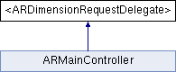

#import <ARDimensionRequest.h>
Inheritance diagram for <ARDimensionRequestDelegate>:

Public Member Functions | |
| (void) | - dimensionRequest:didFinishWithDimension: |
| (void) | - dimensionRequest:didFailWithError: |
| (NSURLConnection *) | - dimensionRequest:connectionWithRequest:delegate: |
Detailed Description
Protocol that should be implemented by users of the ARDimensionRequest class.
Member Function Documentation
| - (NSURLConnection *) dimensionRequest: | (ARDimensionRequest *) | request | ||
| connectionWithRequest: | (NSURLRequest *) | urlRequest | ||
| delegate: | (id) | delegate | ||
[optional] |
Optional method that allows the delegate to inject a specific kind of NSURLConnection, which is useful for testing.
- Parameters:
-
request The sender of the message. urlRequest The request that should be used to create the NSURLConnection. delegate The delegate that should be given to the NSURLConnection.
- Note:
- This method may be called on a thread other than the main thread.
- Returns:
- An instance of NSURLConnection or a subclass that has been started.
| - (void) dimensionRequest: | (ARDimensionRequest *) | request | ||
| didFailWithError: | (NSError *) | error | ||
Called when the dimension request has failed to load a dimension.
- Parameters:
-
request The sender of the message. error The error that occured. May be nil or any kind of error, including an ARDimensionRequest error, NSXMLParser error or NSURL error.
| - (void) dimensionRequest: | (ARDimensionRequest *) | request | ||
| didFinishWithDimension: | (ARDimension *) | dimension | ||
Called when the dimension request has finished and successfully loaded a dimension.
- Parameters:
-
request The sender of the message. dimension The dimension that has been loaded.
The documentation for this protocol was generated from the following file:
- Sources/ARDimensionRequest.h
Generated on Tue Jul 6 2010 08:57:30 for iBetelgeuse by
 1.7.0
1.7.0